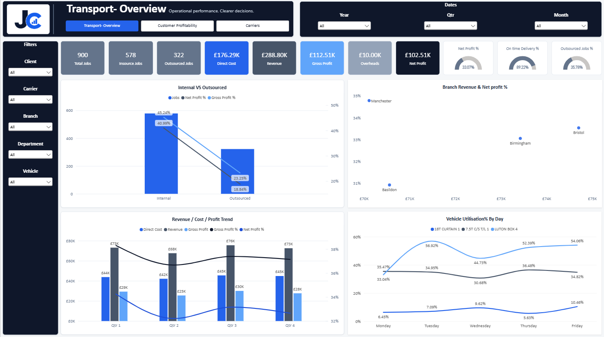
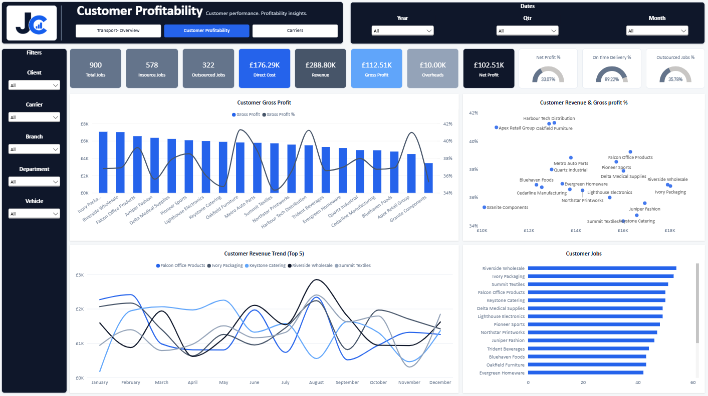
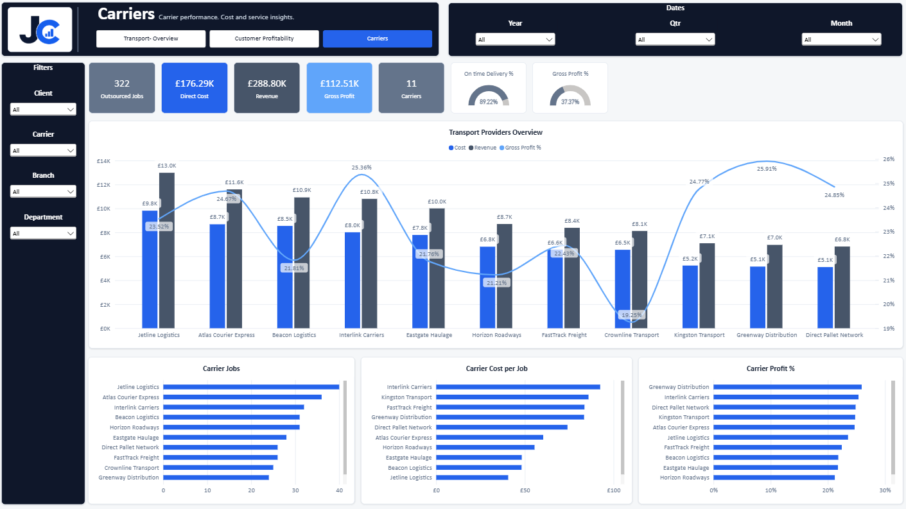
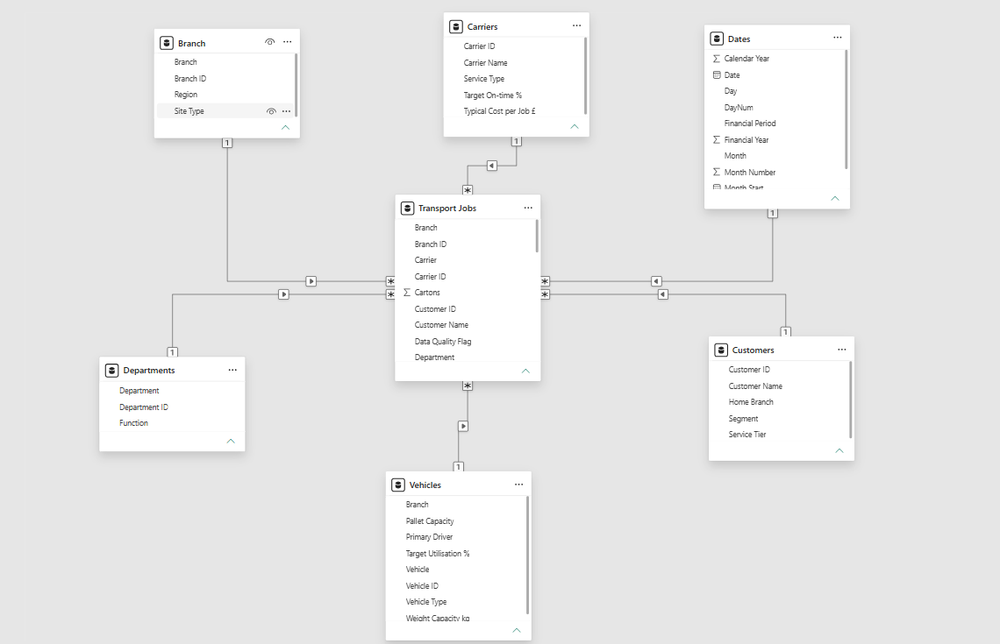

Transport Performance Dashboard
Operational performance, profitability and transport utilisation in one report
This project uses synthetic data created for portfolio purposes. No customer, employee or commercially sensitive business data is included.
Overview
I built this report to give transport and operations managers a clearer view of job volumes, profitability, vehicle utilisation, customer performance and outsourced carrier activity.
The scenario is based around a logistics company with its own transport operation that also uses external carriers when work is outsourced.
The Challenge
Transport performance is not only about completed jobs. Managers also need to understand whether internal resource is fully utilised, whether outsourcing is commercially effective and which customers and carriers create the strongest return.
Transport Overview

The portfolio data contains 578 internal jobs and 322 outsourced jobs. Internal Gross Profit % is 45.24% compared with 23.25% for outsourced work, creating a clear question: could more suitable work be completed internally?
Outsourced % =
DIVIDE(
[Outsourced Jobs],
[Jobs])Vehicle Utilisation
Job Utilisation % =
DIVIDE(
'Transport Jobs'[Weight kg],
RELATED(Vehicles[Weight Capacity kg]))Vehicle utilisation adds the operational context needed to understand whether moving additional work internally is realistic.
On-Time Performance
On time =
CALCULATE(
COUNT('Transport Jobs'[Job ID]),
'Transport Jobs'[On-time Delivery] = "Yes")
On Time % =
DIVIDE(
[On time],
[Jobs])Overall On-Time Delivery is 89.22% in the portfolio data, ensuring commercial decisions are not based on margin alone.
Customer Profitability

This page compares customer jobs, revenue, Gross Profit and Gross Profit %. Oakfield Furniture has a Gross Profit % of around 41%, creating a useful question around whether more high-margin work could be encouraged while still considering volume and customer requirements.
Carrier Analysis

The carrier page compares job volume, cost per job, revenue and Gross Profit %. Greenway Distribution has the highest displayed Gross Profit % at 25.91% but receives fewer jobs than several other carriers.
That does not mean all work should move immediately. Capacity, geographic coverage, route availability, service type and delivery performance still matter. The report identifies an opportunity worth investigating.
Gross Profit % =
DIVIDE(
[Gross Profit],
[Revenue])Data Modelling

The model follows a star-schema structure with Transport Jobs as the central fact table and Customers, Carriers, Vehicles, Branch, Departments and Dates as dimensions.
The portfolio version uses synthetic data to demonstrate the model, DAX and report experience without exposing customer, carrier or commercial information.
Business Value
The report connects internal margin, outsourcing, carrier profitability and vehicle utilisation. It helps answer two practical questions: could more suitable work be completed internally, and where outsourcing is required, are jobs being allocated to providers offering the best combination of cost, profitability and service?
Tools & Skills
Power BI · DAX · Power Query · Data Modelling · Star Schema · Data Visualisation · Transport Analytics · Profitability Analysis · Operational Reporting